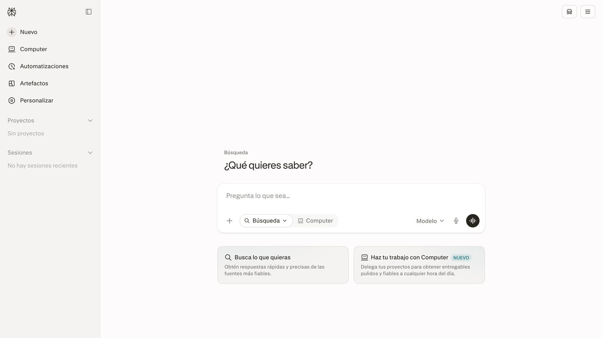
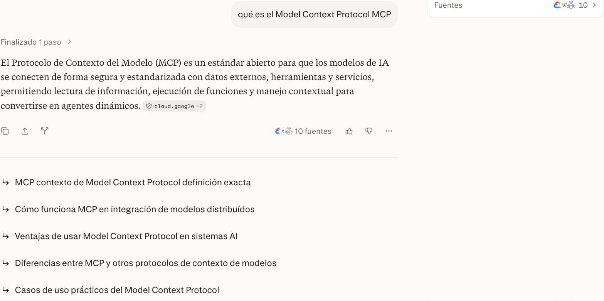
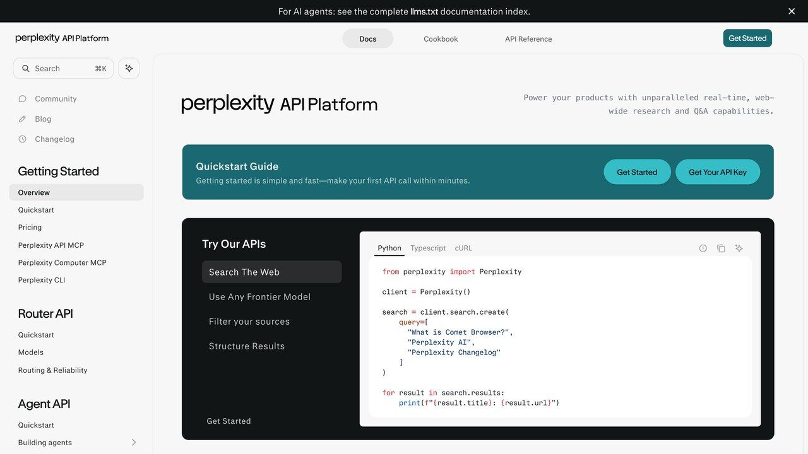

Perplexity y la búsqueda con IA: cómo investigar más rápido
Un buscador que responde con una síntesis y cita sus fuentes, en vez de devolverte diez enlaces para que hagas tú el trabajo. Cómo funciona de verdad, cuándo confiar en la respuesta y el hábito de verificación que no deberías abandonar nunca.
Buscar algo en Google y buscarlo en Perplexity son, en el fondo, dos productos distintos disfrazados de lo mismo. Google te da una lista de enlaces ordenados por relevancia y te deja a ti el trabajo de abrirlos, leerlos y sintetizar la respuesta. Perplexity hace esa síntesis por ti —lee varias fuentes, redacta un resumen coherente en un par de segundos y te muestra exactamente de dónde sacó cada afirmación, con el enlace justo al lado—. No es un chatbot que inventa respuestas de memoria: cada búsqueda dispara una consulta real a la web en el momento en que preguntas, y la respuesta se construye a partir de lo que encuentra, no de lo que el modelo "recuerda" de su entrenamiento.
Esta distinción —responder con fuentes en tiempo real, en vez de generar de memoria— es la que hace que esta categoría de herramientas merezca una guía propia, distinta de nuestra comparativa general entre ChatGPT, Claude y Gemini. Todos esos asistentes generales han añadido también capacidad de búsqueda web, pero Perplexity nació con eso como función central, no como añadido posterior, y eso se nota en cómo prioriza y presenta las fuentes.
El caso de uso que mejor explica por qué esta categoría se independizó como producto propio es la investigación de varios pasos: preguntas donde la respuesta útil no es un solo hecho aislado, sino una síntesis que cruza información de varias fuentes distintas. "¿Qué opciones de visado de trabajo existen para trasladarme a otro país y cuáles son sus requisitos de ingresos mínimos?" es el tipo de pregunta que en un buscador tradicional exige abrir seis o siete páginas oficiales distintas y anotar tú mismo los datos comparables; en una herramienta de búsqueda con IA, esa comparación llega ya montada, con cada dato enlazado a la fuente oficial correspondiente para que la verifiques antes de actuar sobre ella.
Cómo funciona por dentro: RAG aplicado a la web abierta
El mecanismo detrás de Perplexity es una variante del mismo principio que explicamos en nuestra guía de RAG (generación aumentada por recuperación), aplicado a la web entera en vez de a tus propios documentos: cuando escribes una pregunta, el sistema primero lanza varias búsquedas reales a la web (a veces reformulando tu pregunta original en dos o tres consultas distintas para cubrir más ángulos), recupera los fragmentos de texto más relevantes de las páginas encontradas, y solo entonces le pasa esos fragmentos a un modelo de lenguaje con instrucciones de responder basándose exclusivamente en ellos y citar de dónde sale cada dato.
Esto reduce mucho el riesgo de alucinaciones respecto a preguntarle lo mismo a un modelo de lenguaje puro sin acceso a la web, porque el modelo no está inventando el dato desde su memoria de entrenamiento: está resumiendo un texto real que tiene delante en el momento de responder. No lo elimina del todo —el modelo puede malinterpretar o mezclar matices de las fuentes que lee—, pero cambia la naturaleza del error: en vez de "el modelo inventó algo que no existe en ningún sitio", el fallo más común pasa a ser "el modelo resumió mal una fuente real que sí existe", un error mucho más fácil de detectar porque puedes abrir la fuente citada y comprobarlo en segundos.
El sistema también decide por su cuenta cuántas búsquedas lanzar según la complejidad de la pregunta. Una pregunta simple de definición dispara una sola consulta; una pregunta comparativa ("diferencias entre X e Y") suele disparar dos o tres consultas separadas, una por cada término, para luego combinar los resultados en una respuesta unificada. Este proceso, invisible para quien solo ve la respuesta final, es la razón por la que preguntas complejas tardan más segundos en responderse que preguntas simples: no es que el modelo "piense más despacio", es que literalmente está esperando los resultados de más búsquedas reales antes de sintetizar nada.
Una búsqueda real, paso a paso
Así se ve una consulta real hecha a Perplexity sin necesidad de crear cuenta, usando esta misma guía como ejemplo:

Tres elementos de esa captura importan más que el texto de la respuesta en sí. Primero, el contador de "10 fuentes" junto al botón de compartir: puedes desplegarlo y ver exactamente qué páginas se consultaron, algo que ningún buscador tradicional te muestra de forma tan directa. Segundo, la etiqueta con el dominio de la fuente principal justo debajo de la respuesta (en este caso, un dominio de Google), que te da una pista inmediata de la fiabilidad sin tener que abrir nada. Tercero, la lista de "preguntas relacionadas" al final, generada automáticamente a partir de lo que otros suelen preguntar después de esa misma búsqueda — útil para profundizar sin tener que pensar tú la siguiente pregunta.
También puedes seguir la conversación con una pregunta de seguimiento sin perder el contexto de la anterior, igual que en cualquier chat de IA: preguntar "¿y cómo se compara con REST tradicional?" justo después de la búsqueda sobre MCP del ejemplo continúa la investigación sobre el mismo hilo, en vez de obligarte a repetir todo el contexto desde cero como haría escribir una nueva búsqueda en un buscador tradicional. Esta capacidad de encadenar preguntas es, junto con la síntesis con fuentes, la otra gran diferencia práctica frente a una búsqueda clásica.
Un caso real: preparar una reunión con un cliente nuevo en diez minutos
Un consultor independiente que atiende clientes nuevos cada semana usa Perplexity como primer paso antes de cualquier reunión de presentación. En vez de abrir seis pestañas distintas —la web de la empresa, su perfil en redes profesionales, noticias recientes, la competencia directa—, hace una única pregunta compuesta: "¿A qué se dedica [empresa], quién es su director general, y qué noticias relevantes han tenido en los últimos seis meses?".
La respuesta llega en menos de un minuto con las fuentes citadas una por una: la web oficial para la actividad de la empresa, un perfil profesional para el cargo del directivo, y dos o tres artículos de prensa reciente para las noticias. El consultor no se queda con el resumen tal cual —abre las dos o tres fuentes que parecen más relevantes para confirmar los datos clave antes de mencionarlos en la reunión—, pero ese primer barrido que antes le llevaba quince minutos de búsqueda manual ahora le lleva dos, dejando el resto del tiempo para preparar preguntas de verdad relevantes en vez de recopilar datos básicos.

Cuándo confiar en la respuesta y cuándo verificar tú mismo
La regla práctica que aplicamos en esta redacción para cualquier herramienta de búsqueda con IA, no solo Perplexity: la citación de una fuente no es garantía de que la fuente sea buena, solo de que existe. Un sistema de búsqueda con IA puede citar perfectamente un blog personal sin autoridad, un foro con información desactualizada o un artículo con un error, con la misma seguridad con la que citaría un estudio revisado por pares. La responsabilidad de juzgar la calidad de la fuente sigue siendo tuya; lo que cambia es que ahora tienes el enlace justo al lado para comprobarlo en el momento, en vez de tener que buscarlo tú desde cero.
CONFÍA CON MÁS TRANQUILIDAD
- Hechos estables y bien documentados (definiciones técnicas, datos históricos).
- Preguntas donde las fuentes citadas son medios o documentación oficial reconocibles.
- Comparaciones de especificaciones técnicas verificables (tamaños, fechas de lanzamiento).
VERIFICA TÚ MISMO
- Temas con información muy reciente donde las fuentes aún se contradicen entre sí.
- Cualquier cifra o estadística que vaya a citar en un documento propio o una decisión importante.
- Temas médicos, legales o financieros donde el matiz exacto de la fuente importa mucho.
Perplexity frente a la búsqueda con IA de ChatGPT, Gemini y Claude
Los tres asistentes generales han incorporado su propia versión de búsqueda web en tiempo real, así que la pregunta razonable es si necesitas una herramienta aparte. La diferencia principal está en el énfasis: Perplexity trata cada respuesta como el resultado principal de la interacción, con las fuentes en un panel siempre visible y accesible en un clic; los asistentes generales tratan la búsqueda web como una herramienta más dentro de una conversación centrada en otras cosas (escribir, programar, analizar), y las fuentes suelen quedar como notas al pie menos prominentes.
Otra diferencia práctica es la profundidad por defecto de las respuestas: los asistentes generales tienden a dar una respuesta breve salvo que pidas explícitamente más detalle, mientras que Perplexity, al estar diseñado alrededor de la investigación, ofrece por defecto un nivel de detalle algo mayor con más fuentes visibles de entrada. Para investigación intensiva y comparación de fuentes, Perplexity suele ganar por ese diseño centrado en la cita. Para una pregunta puntual dentro de un flujo de trabajo donde ya estás usando el asistente para otra cosa (redactar un correo, revisar código), preguntarle directamente a ese mismo asistente evita cambiar de aplicación. No son mutuamente excluyentes: muchos usuarios avanzados usan ambos según el contexto, igual que explicamos para las herramientas de nuestra guía de mejores asistentes de IA.
Hay también una diferencia de negocio que conviene conocer: Perplexity se financia con publicidad y suscripciones, sin vender espacio destacado dentro de las respuestas por ahora, mientras que los buscadores tradicionales llevan décadas conviviendo con resultados patrocinados mezclados entre los orgánicos. Esto puede cambiar a medida que estas herramientas maduren como negocio, así que no des por hecho para siempre que una respuesta sintetizada está libre de cualquier incentivo comercial en su selección de fuentes — es una pregunta razonable que merece la pena seguir haciéndose según evolucione el sector.
Los límites técnicos que persisten en 2026
Ningún sistema de búsqueda con IA resuelve todavía bien la información que cambia literalmente mientras hablas: precios en tiempo real, resultados deportivos en directo o cotizaciones bursátiles al segundo siguen teniendo un pequeño desfase entre el momento en que el sistema hizo la búsqueda y el momento en que lees la respuesta, porque cada consulta tarda unos segundos en resolverse de principio a fin. Para ese tipo de datos que cambian segundo a segundo, una fuente directa especializada (una web de cotizaciones, un marcador en directo) sigue siendo más fiable que preguntarle a cualquier asistente de búsqueda con IA.
Tampoco resuelve bien preguntas donde la respuesta correcta depende de un contexto muy local que no está bien representado en la web indexada: horarios exactos de un comercio pequeño sin presencia digital fuerte, normativa municipal muy específica de una localidad concreta, o disponibilidad real de un producto en una tienda física. En estos casos, el sistema suele devolver la mejor aproximación que encuentra indexada, que puede estar desactualizada sin que haya forma de saberlo solo mirando la respuesta.
Por último, un límite menos técnico y más estructural: estos sistemas heredan los sesgos de qué contenido existe y está bien indexado en la web abierta, lo que favorece sistemáticamente a fuentes en idiomas y regiones con más producción de contenido digital. Una pregunta sobre un tema muy documentado en inglés y poco documentado en español tenderá a apoyarse más en fuentes traducidas del inglés, incluso preguntando en español, simplemente porque es donde existe más material de partida.
Funciones que van más allá de la búsqueda simple
Un modo que lanza decenas de búsquedas encadenadas sobre un tema amplio a lo largo de varios minutos y devuelve un informe estructurado con secciones, tabla de contenidos y citas ordenadas por apartado, pensado para investigación de mercado, un estado del arte técnico o revisión completa de un tema nuevo desde cero sin tener que ir pregunta a pregunta.
Puedes restringir la búsqueda a un tipo de fuente concreto (solo artículos académicos, solo redes sociales, un dominio específico como una web de documentación) cuando necesitas acotar de dónde viene la respuesta en vez de dejar que el sistema elija libremente entre toda la web abierta.
Delega tareas de varios pasos que combinan búsqueda con acción (rellenar un formulario, comparar precios en varias webs) sin que tengas que supervisar cada paso intermedio.
Agrupa búsquedas relacionadas de un mismo proyecto de investigación, con instrucciones persistentes que se aplican a todas las consultas dentro de ese espacio.
Claude SEO: audita si Google y las IAs encuentran tu web
Cada vez más gente busca con asistentes como Perplexity, y tu web tiene que poder ser citada. Claude SEO es un plugin gratuito y de código abierto (MIT) para Claude Code con 26 subskills y 19 agentes especializados en SEO técnico, calidad de contenido, datos estructurados, búsqueda con IA y SEO local.
Instalación
- En Claude Code:
/plugin marketplace add AgriciDaniel/claude-seo. - Después:
/plugin install claude-seo@agricidaniel-claude-seo. - Ejecuta
/seo setup: crea un entorno de Python aislado e instala Chromium. Con/seo doctorcompruebas que todo está listo.
Comandos útiles
/seo audit tuweb.com: auditoría completa con agentes en paralelo./seo page URL: análisis a fondo de una sola página./seo technical URL: auditoría técnica en nueve categorías.
Según el autor, cada recomendación incluye una forma de comprobar si ha funcionado.
Lo honesto: necesitas Claude Code, que es de pago, y una auditoría completa consume bastante uso. El autor mantiene además una versión privada para miembros de una comunidad de pago; la pública es gratuita. Ninguna herramienta garantiza posiciones en Google.
Repositorio: github.com/AgriciDaniel/claude-seo